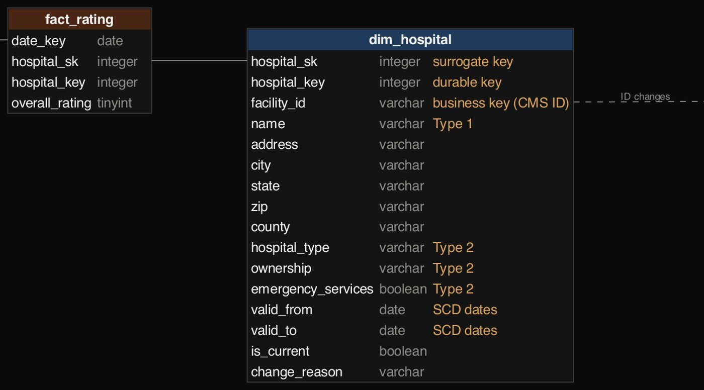
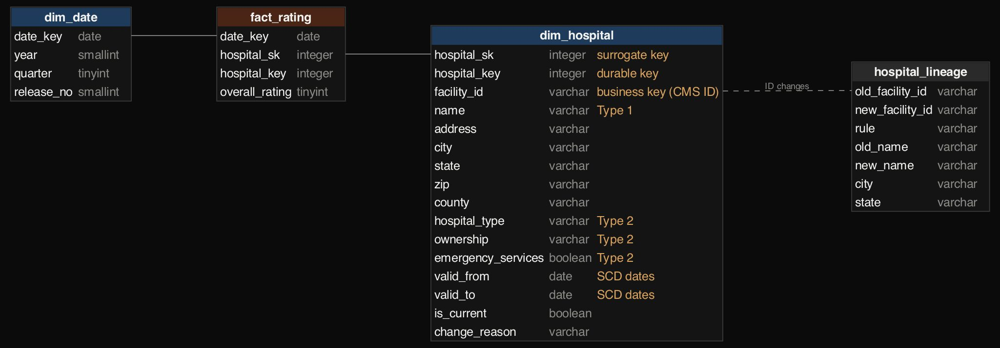
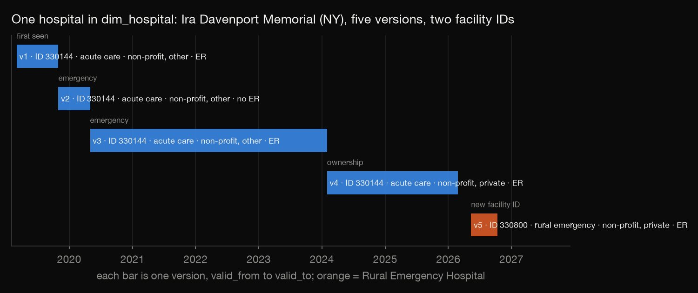
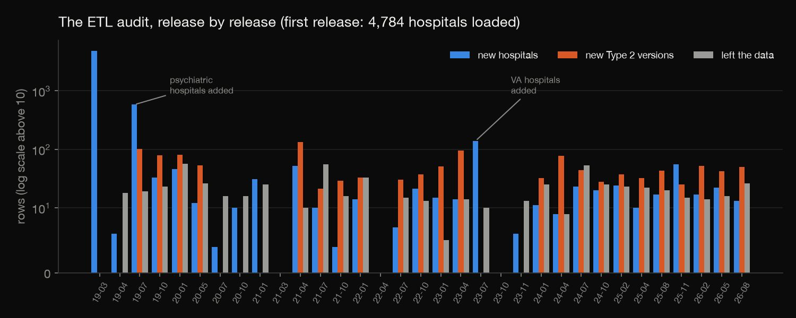
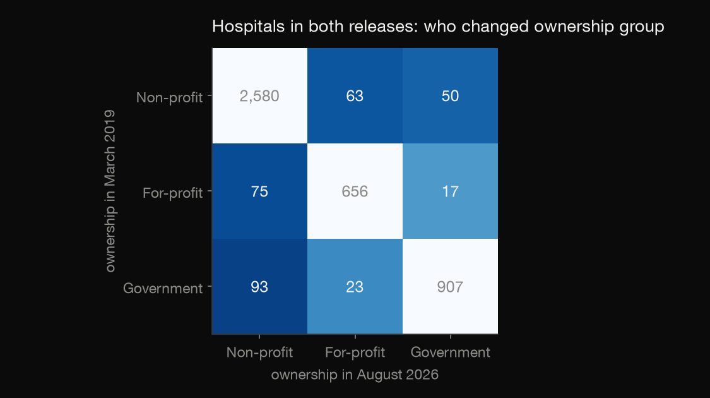
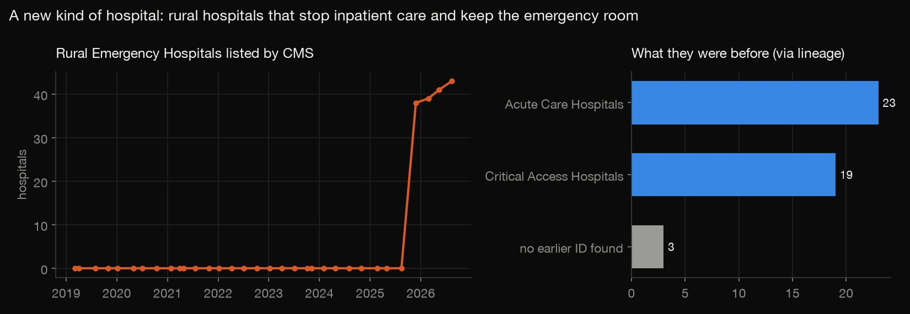

SQL · Data warehousing · 2026-10
Hospital Data Warehouse
Seven years of quarterly CMS hospital releases rebuilt into a star schema with full history: ownership changes, hospitals that turned into a new kind of rural ER, and a durable key that survives ID changes.

The links between old and new facility IDs come from a matching rule, not from CMS's own records; all 104 are published for review. Star-rating methods changed in 2021, so ratings across years aren't strictly comparable.
01 — The problem
Every quarter CMS publishes a fresh file of every US hospital: name, type, ownership, emergency services and overall star rating. Each file replaces the last, so the questions that matter for health-system analysts disappear. Which hospitals changed ownership, and when? Which became a new kind of hospital? What did the ratings look like for hospitals as they were at the time?
02 — What I built
A Kimball star schema in DuckDB, loaded from 33 quarterly CMS releases (March 2019 – August 2026):
- A slowly changing hospital dimension: Type 2 history for ownership, type and emergency services; Type 1 for name and address.
- A durable hospital key and a lineage table, for hospitals that change their CMS ID.
- A periodic snapshot fact of star ratings.
- An idempotent, release-by-release ETL with an audit table, checked against the raw files.
03 — How it was built
- 01
Collect seven years of snapshots
CMS's catalog has an archive API listing every quarterly zip.
download.pypulls 34 of them and keeps the General Information file from each. That needs care:- File names changed: in 2020 the files were named only by dataset ID.
- Columns were renamed: "Provider ID" became "Facility ID", for example, so one mapping gives every year the same names.
- One partial update (September 2026) doesn't include this dataset, leaving 33 releases.
names = [n for n in zf.namelist() if ("general" in n.lower() or "xubh" in n.lower()) - 02
Decide what deserves history
I measured how often each attribute changes between releases before designing the dimension. Ownership changed 860 times, emergency services 411 and names 2,081, but many name changes are cosmetic ("ST VINCENT'S" → "ST. VINCENT'S"). So ownership, type and emergency services get Type 2 history (a new dated row), while name and address are Type 1 (overwritten).

hospital_key integer NOT NULL, -- durable key: same hospital across versions and ID changes - 03
Keep one hospital one hospital
When a rural hospital becomes a Rural Emergency Hospital, or an acute hospital becomes a critical access hospital, CMS gives it a new ID. Keyed on the ID alone, it would look like a closure plus an opening. A lineage rule links them: the old ID left the data in the same city before the new one appeared, and either the names share at least half their distinctive words, or the new one is a Rural Emergency Hospital with a single candidate in its city. That gives 104 links, including Fannin Regional Hospital becoming Blue Ridge Medical Center.

WHERE name_overlap >= 0.5 OR (new_type = 'Rural Emergency Hospital' AND candidates = 1) - 04
Load release by release, safely
For each release in order,
warehouse.py:- stages and normalises the file;
- overwrites Type 1 attributes;
- closes changed versions and opens new ones;
- closes hospitals that left the data and reopens returners;
- adds new hospitals, carrying the durable key across ID changes;
- appends the ratings.
A release that's already loaded is skipped, so running the job again changes nothing. The audit table also exposes the source: 581 "new" hospitals in July 2019 are CMS adding psychiatric hospitals, 139 in July 2023 are VA hospitals, and three releases repeated the previous one exactly.

UPDATE dim_hospital SET valid_to = DATE '{snap}', is_current = false WHERE hospital_sk IN (SELECT hospital_sk FROM changed); - 05
Check it against the raw files
check.pyre-runs the job and confirms nothing changes. It also confirms:- no hospital has two current versions or overlapping dates;
- every one of 175,908 facts points at the version valid on its date;
- for 500 random hospital-release pairs, ownership, type and emergency services as stored match the raw snapshot file exactly.
return False # already loaded: idempotent
04 — Results
| Recorded ownership changes | Count |
|---|---|
| Total versions | 859 |
| Relabel within a group | 378 |
| Undone next release | 79 |
| Real moves that stuck | 431 |
- Ownership moves both ways. Of hospitals in both the first and last releases, 63 non-profits became for-profit and 75 for-profits became non-profit. 93 government hospitals became non-profit.
- A new kind of hospital: 45 Rural Emergency Hospitals (rural hospitals that stop inpatient care but keep the ER), listed by CMS only from November 2025. Lineage traces 42 to an earlier hospital: 23 acute-care and 19 critical access.
- As-was vs as-is: the 4–5-star share by ownership in 2019 moves by under a point whether hospitals are grouped by their ownership then or now (non-profit 40.8% vs 40.5%). For that question a simpler design would do; for "who converted, and when" only Type 2 works.


05 — What I'd do next
- Confirm lineage links with CMS's Provider of Services file, which records related provider numbers.
- Add readmission and patient-experience facts on the same dimensions.
- Follow star ratings before and after ownership changes.